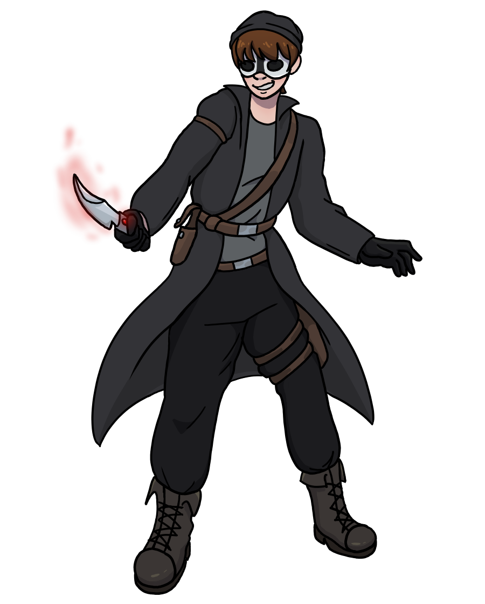
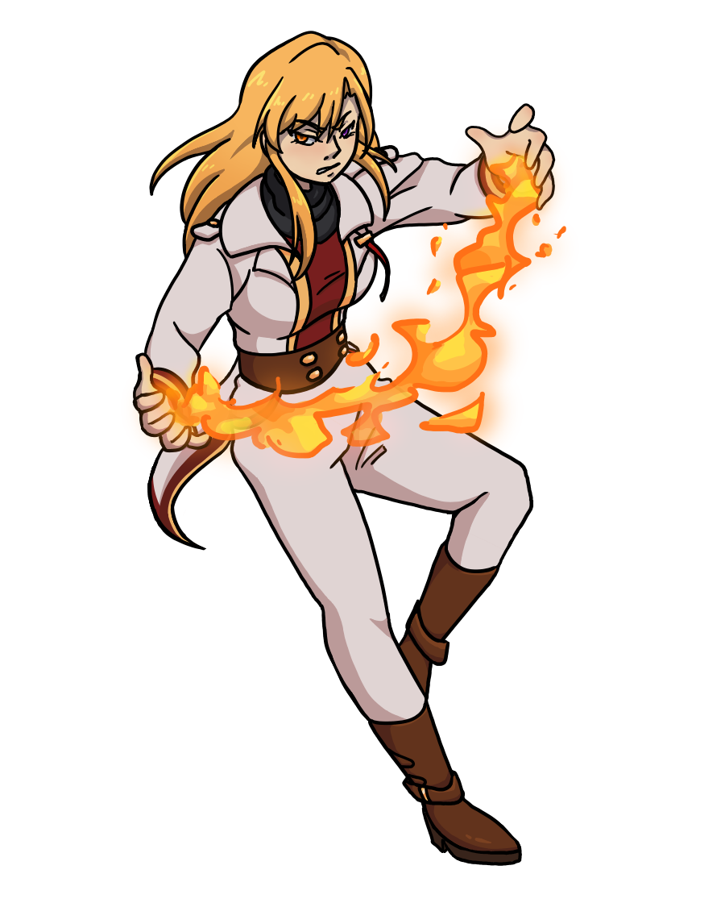
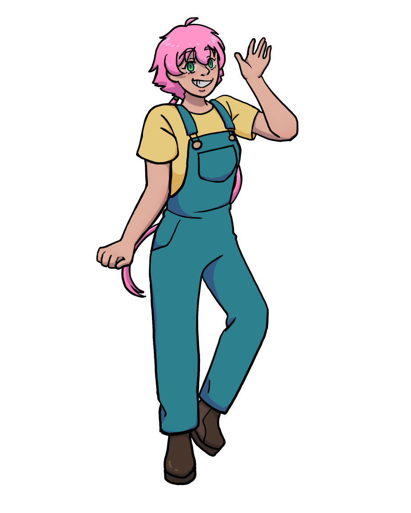

The World of SOLO
Preface
This was a story concept that I created when I was in middle school. I wanted to turn this into an anime series, something akin to One Piece or Fairy Tail. Unfortunately, I didn't really get into the plot and different arcs that would happen, so I mainly only have the main characters figured out right now. But it still holds a nostalgic place in my heart :)
Overview
SOLO is a story about a wanted thief that gets into an unlikely alliance with a member of the National Guard. The two of them bond as they escape life-or-death situations from other vigilantes and bounty hunters, learning that there's more to someone than meets the surface. Along the way, they make new friendships as they embark on a journey to find someone who went missing years ago, only to become the villain.

Solo (Jun Knight)
Jun Knight, the main protagonist, is a wanted criminal, constantly on the run. She had learned to disguise herself as a man to protect her identity, which is now the facade she displays in public. She gave herself the name Solo to represent how she prefers to work alone. As a non-magic user, she relies on her dagger which has the ability to absorb the arcana surrounding it.
Coming from a tragic past, her true intentions are to search for her best friend that she had lost a decade earlier. She steals to stay afloat, and hopes to one day reach her best friend's level in infamousy on the chance that they will cross paths again. It is unknown what truly happened to him, but she suspects that a dark spirit has possessed him and now controls his will. She is unsure of how, but she has made it her lifelong mission to find him and save him from its clutches.

Karma Lin
Karma Lin, the deuteragonist, is a powerful fire mage working for the National Guard. The National Guard is this world's equivalent to law enforcers, protecting the citizens from the threats of sinister magic users. Despite being a higher rank, nearly surpassing her way to the top, she chooses to side with Jun after their first altercation went awry. She doesn't quite understand why she feels a kinship towards Jun, but after learning that there's more to the thief than meets the eye, Karma decides to help her on her mission despite Jun's protests.

Yanaba
Yanaba is a seemingly optimistic farm girl that decided to also join Jun's ventures. Jun and Karma are unlike anything that she has ever seen, and she feels the sense of adventure gives her meaning in life. On the surface, she acts as a ditsy, hyper girl, while she secretly struggles with thoughts of self-importance and worth.
Sholin
Where are you? Why can't I find you? Where did you go? What happened to you that day? Please, come back. Please talk to me. I don't understand, what did it do to you? I want to help you, I know I can, just please. Let me find you again. I need to find you again. I need to help you. Where are you?
Where are you? Where are you? Where are you? Where are you? Where are you? Where are you? Where are you? Where are you? Where are you? Where are you? Where are you? Where are you?
![An image of a woman with her arms behind her back, head tilted towards the camera. A mischevous smile crosses her face, reaching her red eyes. Her black hair ends with long, thin pigtails that float behind her. A simple headress dons her head, with a red gem in the center. She wears a grey dress that fades to a darker shade, the fabric magically flowing around her. A red shoe peeks out from beneath the fabric. Her dress is accented with a red belt and black lace, her bodice lined with a white ribbon. She also wears a black choker with another red gem adorning it.](niru.png)